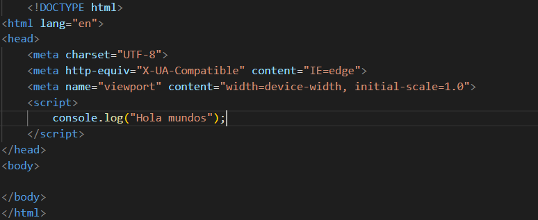
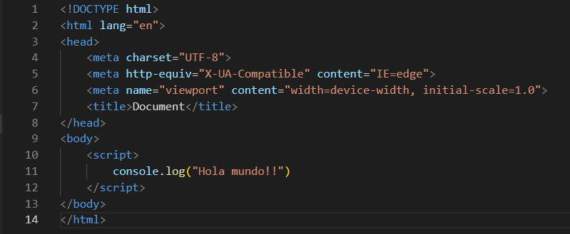
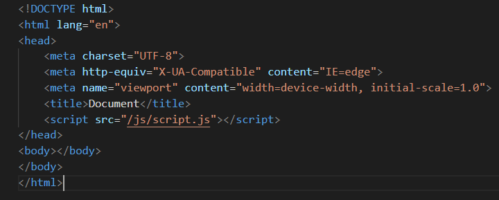
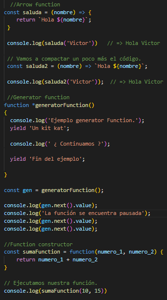
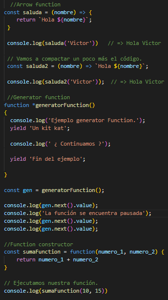

1)¿Qué versiones de JavaScript hay en el mercado?.
Las versiones de JavaScript que se encuentran en el mercado son:
ECMAScript 13
ECMAScript 12
ECMAScript 11
ECMAScript 10
ECMAScript 9
ECMAScript 8
ECMAScript 7
ECMAScript 6
JavaScript 1.5
JavaScript 1.3
JavaScript 1.2
JavaScript 1.1
JavaScript 1.0
¿Cómo se integra JavaScript a HTML?.
JavaScript se puede integrar a HTML de 3 formas diferentes:
1-Utilizando la etiqueta script en el head
Ejemplo
2-Utilizando la etiqueta script en el body
Ejemplo
3-Utilizando la etiqueta script pero para importar archivo externo
Ejemplo
¿Cómo es el manejo de las variables, tipos de datos y expresiones regulares en JS?.
JS utiliza tres maneras de declarar las variables:
Declara una variable, opcionalmente la inicia a un valor, let: Declara una variable local con ámbito de bloque, opcionalmente la inicia a un valor y const: Declara un nombre de constante de solo lectura y ámbito de bloque. Sus nombres o identificadores tienen ciertas normas al utilizarlas. Tales como:deben comenzar con una letra, un guión bajo o un signo de dólar y solo pueden poner en mayúscula la letra “A”.
Datos primtivos en JavaScript
- Undefined: Una variable a la que no se le ha asignado un valor tiene el valor undefined.
- Boolean: representa una entidad lógica y puede tener dos valores: true y false.
- Number: es un valor en formato binario de 64 bits de doble precisión IEEE 754 (números entre -(253 - 1) y 253 - 1).
- String: se utiliza para representar datos textuales. Es un conjunto de "elementos" de valores enteros sin signo de 16 bits.
- BigInt: es un primitivo numérico en JavaScript que puede representar números enteros con precisión arbitraria.
- Symbol: Un símbolo es un valor primitivo único e inmutable y se puede utilizar como clave de una propiedad de objeto.
Las expresiones regulares son patrones que se utilizan para hacer coincidir combinaciones de caracteres en cadenas. En JavaScript, las expresiones regulares también son objetos. Estos patrones se utilizan con los métodos RegExp:
- exec() : Ejecuta una búsqueda por una coincidencia en una cadena. Devuelve un arreglo de información o null en una discrepancia.
- test() : Prueba una coincidencia en una cadena. Devuelve true o false.
- match() : Devuelve un arreglo que contiene todas las coincidencias, incluidos los grupos de captura, o null si no se encuentra ninguna coincidencia.
- matchAll() : Devuelve un iterador que contiene todas las coincidencias, incluidos los grupos de captura.
- replace() : Ejecuta una búsqueda por una coincidencia en una cadena y reemplaza la subcadena coincidente con una subcadena de reemplazo.
- replaceAll() : Ejecuta una búsqueda de todas las coincidencias en una cadena y reemplaza las subcadenas coincidentes con una subcadena de reemplazo.
- search() : Prueba una coincidencia en una cadena. Devuelve el índice de la coincidencia, o -1 si la búsqueda falla.
- split() : Utiliza una expresión regular o una cadena fija para dividir una cadena en un arreglo de subcadenas.
Caracteres especiales que se pueden usar en expresiones regulares:
- Clases de caracteres: \, ., \cX, \d, \D, \f, \n, \r, \s, \S, \t, \v, \w, \W, \0, \xhh, \uhhhh, \uhhhhh, [\b]
- Aserciones: ^, $, x(?=y), x(?!y), (?<=y)x, (?
- Grupos y rangos: (x), (?:x), (?Name>x), x|y, [xyz], [^xyz], \Number
- Cuantificadores: *, +, ?, x{n}, x{n,}, x{n,m}
- Escapes de propiedades Unicode: \p{UnicodeProperty}, \P{UnicodeProperty}
4) ¿Cómo son todas las formas de declaración de funciones en JS?.
 

5) ¿Cuáles son los operadores y conversión entre tipos?.
Las tres conversiones de tipo más usadas son:
ToString
ToNumber
ToBoolean
Los tipos de operadores que hay son:
Operadores aritméticos
Operadores de comparación
Operadores lógicos
Operadores de concatenación
Operadores especiales
6)¿Cuáles son las estructura de control de JS?.
Las estructuras de control son:
Condicionales
- IF/ELSE
- Múltiples ELSE
- SWITCH
Bucles
- FOR
- WHILE
- BUCLE DO/WHILE
7)¿Qué es el objeto dom en JS? Y ¿Cómo trabaja?.
DOM(Document Object Model) Es una interfaz de programación que nos permite crear, cambiar, o remover elementos del documento. Traduce el contenido de un documento HTML a un objeto estandarizado, al que los lenguajes de programación funcionales como JavaScript tienen facilidad de acceso y modificación.